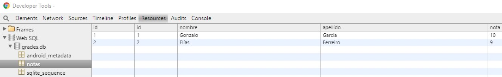
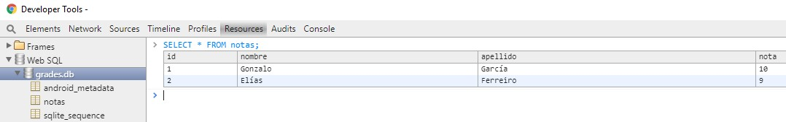
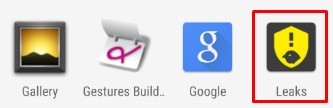

Android
Third party libraries
Created by Gonzalo
We'll see...
- Production libraries
- Development libraries
Production libraries
- Butterknife
- Retrofit
- Dagger 2
- Picasso
Development libraries
- Stetho
- LeakCanary
Butterknife
Butterknife
Jake Wharton (Google) under Apache License 2.0
Bind Android views and callbacks to fields and methods using Java anotations
Without Butterknife
public class MainActivity extends AppCompatActivity {
TextView tvMain;
Button btnMain;
@Override
protected void onCreate(Bundle savedInstanceState) {
super.onCreate(savedInstanceState);
setContentView(R.layout.activity_main);
this.tvMain = (TextView) findViewById(R.id.tv_main);
this.btnMain = (Button) findViewById(R.id.btn_main);
this.tvMain.setText(R.string.app_name);
}
}
With Butterknife
public class MainActivity extends AppCompatActivity {
@BindView(R.id.tv_main) TextView tvMain;
@BindView(R.id.btn_main) Button btnMain;
@Override
protected void onCreate(Bundle savedInstanceState) {
super.onCreate(savedInstanceState);
setContentView(R.layout.activity_main);
ButterKnife.bind(this);
this.tvMain.setText(R.string.app_name);
}
}
Not just views...
@BindView(R.id.tv_main) TextView tvMain;
@BindView(R.id.btn_main) Button btnMain;
@BindColor(R.color.colorAccent) int accentColor;
@Override
protected void onCreate(Bundle savedInstanceState) {
super.onCreate(savedInstanceState);
setContentView(R.layout.activity_main);
ButterKnife.bind(this);
this.btnMain.setOnClickListener(new View.OnClickListener() {
@Override
public void onClick(View view) {
tvMain.setText("Clicked!");
}
});
}
@OnClick(R.id.btn_main)
public void clickMain() {
tvMain.setText("Clicked!");
}
Retrofit

Retrofit
Square, Inc. under Apache License 2.0
Use annotations to describe the HTTP request
- URL parameter replacement
- Request body conversion (JSON...)
- Multipart request body and file upload
Define Java interface
public interface PlayService {
@GET("game/{topicId}")
Observable<Game> getGame(@Path("topicId") long topicId, @Query("level") int level, @Query("eLevel") int englishLevel);
}
topidId = 2, level = 0 and englishLevel = 0
http://server.com/game/2?level=0&eLevel=0
Create Retrofit service
Retrofit retrofit = new Retrofit.Builder()
.baseUrl(ENDPOINT)
.client(okHttpClient)
.addCallAdapterFactory(RxJava2CallAdapterFactory.create())
.addConverterFactory(GsonConverterFactory.create(
new GsonBuilder().setDateFormat(Constants.DATE_FORMAT).create()))
.build();
PlayService service = retrofit.create(PlayService.class);
Call endpoint
service.getGame(2 /*topicId*/, 0 /*level*/, 0 /*englishLevel*/)
.subscribeOn(Schedulers.io())
.observeOn(AndroidSchedulers.mainThread())
.subscribe(this::gameResponse, this::onError);
Manage response
private void gameResponse(Game game) {
//Receive game object
if(game == null)
return;
//Play with Game!
}
Manage error
private void onError(Throwable throwable) {
if (throwable instanceof HttpException) {
// We had non-2XX http error
HttpException httpError = (HttpException) throwable;
Toast.makeText(context, httpError.message(), Toast.LENGTH_SHORT).show();
}
else if (throwable instanceof IOException) {
// A network or conversion error happened
Toast.makeText(context, "There was a network issue. Please try again later.", Toast.LENGTH_SHORT).show();
}
else {
// We don't know what happened
Toast.makeText(context, "Unexpected error. Please try again later.", Toast.LENGTH_SHORT).show();
}
}
File example (I)
public interface FileService {
@Streaming
@GET
Call<ResponseBody> downloadFile(@Url String fileUrl);
}
Treat the response body on methods returning Response as is = without converting body() to byte[].
File example (II)
public void downloadFile(String url, String name, FileManagerListener listener) {
Call<ResponseBody> call = fileService.downloadFile(url);
call.enqueue(new Callback<ResponseBody>() {
@Override
public void onResponse(Call<ResponseBody> call, Response<ResponseBody> response) {
if (response.isSuccessful()) {
Log.d(TAG, "Server contacted and has file: "+url);
new AsyncTask<Void, Void, Void>() {
@Override
protected Void doInBackground(Void... voids) {
boolean writtenToDisk = writeResponseBodyToDisk(response.body(), name);
Log.d(TAG, "File download was a success? " + writtenToDisk);
return null;
}
@Override
protected void onPostExecute(Void aVoid) {
listener.onDownloadFinish(true);
}
}.execute();
}
else {
Log.d(TAG, "Server contact failed: "+url);
}
}
@Override
public void onFailure(Call<ResponseBody> call, Throwable t) {
Log.e(TAG, "error");
listener.onDownloadFinish(false);
}
});
}
Asynchronously send the request and notify callback.
More annotations...
// Other HTTP Requests
@POST("user/edit")
@PUT("user/photo")
// Simple and multiple headers
@Headers("Cache-Control: max-age=640000")
@Headers({
"Accept: application/vnd.github.v3.full+json",
"User-Agent: Retrofit-Sample-App"
})
Dagger 2
Dagger 2
Adaptation of Dagger (Square) and now maintained by Google
Fully static, compile-time dependency injection framework for Java and Android
Declaring Dependencies
public class LoadGamePresenter extends BasePresenter<BaseView> {
private PlayService service;
@Inject
LoadGamePresenter(PlayService service) {
this.service = service;
}
}
Satisfying Dependencies
@Module
public class AppModule {
@Provides
PlayService providePlayService() {
Retrofit retrofit = new Retrofit.Builder()
.baseUrl(BASE_URL)
.client(new OkHttpClient())
.addCallAdapterFactory(RxJava2CallAdapterFactory.create())
.addConverterFactory(GsonConverterFactory.create(
new GsonBuilder().setDateFormat(Constants.DATE_FORMAT).create()))
.build();
return retrofit.create(PlayService.class);
}
}
You can use @Singleton
Generating component
@Singleton
@Component(modules = AppModule.class)
public interface AppComponent {
LoadGamePresenter createLoadGamePresenter();
}
public class App extends Application {
private AppComponent component;
protected AppComponent createComponent() {
return DaggerAppComponent.builder()
.appModule(new AppModule(this))
.build();
}
public static AppComponent getAppComponent(Context context) {
App app = (App) context.getApplicationContext();
if (app.component == null) {
app.component = app.createComponent();
}
return app.component;
}
}
Injection in action
Get Application reference and call Component injector
public class LoadGameFragment extends BaseFragment<BaseView, LoadGamePresenter> implements BaseView{
public LoadGameFragment() {
}
@Override
protected LoadGamePresenter createPresenter() {
return App.getAppComponent(getContext()).createLoadGamePresenter();
}
}
Picasso
Picasso
Square, Inc. under Apache License 2.0
A powerful image downloading and caching library
- ImageView recycling and in adapters
- Image transformations with low memory use
- Automatic memory and disk caching
So simple as
Picasso.with(context)
.load(url)
.resize(50, 50)
.centerCrop()
.placeholder(R.drawable.user_placeholder)
.error(R.drawable.user_placeholder_error)
.into(imageView);
Stetho
Stetho
Facebok, BSD-licensed
A debug bridge for Android applications
- Network Inspection
- Database Inspection
- View Hierarchy
- And more... just with Chrome!
Init in App creation
public class App extends Application {
public void onCreate() {
super.onCreate();
//Debug chrome
Stetho.initializeWithDefaults(this);
}
}
And start inspecting!
Chrome inspection
Navigate: chrome://inspect


Network inspection
@Module
public class AppModule {
@Provides
PlayService providePlayService() {
OkHttpClient okHttpClient = new OkHttpClient.Builder()
.addNetworkInterceptor(new StethoInterceptor())
.build();
Retrofit retrofit = new Retrofit.Builder()
.baseUrl(BASE_URL)
.client(okHttpClient)
.addCallAdapterFactory(RxJava2CallAdapterFactory.create())
.addConverterFactory(GsonConverterFactory.create(
new GsonBuilder().setDateFormat(Constants.DATE_FORMAT).create()))
.build();
return retrofit.create(PlayService.class);
}
}
LeakCanary
LeakCanary
Square, Inc. under Apache License 2.0
A memory leak detection library for Android and Java
Init in App creation
public class App extends Application {
public void onCreate() {
super.onCreate();
//Debug memory
if (LeakCanary.isInAnalyzerProcess(this)) {
// This process is dedicated to LeakCanary for heap analysis.
// You should not init your app in this process.
return;
}
LeakCanary.install(this);
}
}
And start crying!
LeakCanary will automatically show a notification when an activity memory leak is detected
A LeakCanary App installed will be installed to see memory leaks
